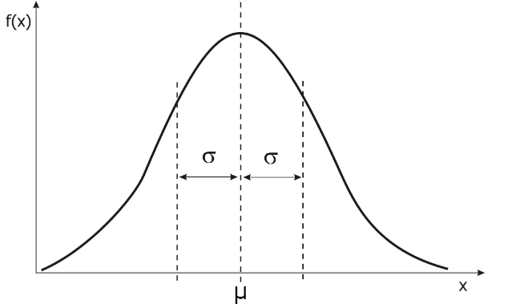
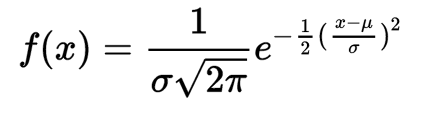

Matematyka (laboratorium, semester 2)
Prowadzący: dr Paulina Grzegorek
Funkcja gęstości wygląda następująco:

Funkcja jest dana parametrami \(N(μ, ρ)\),
gdzie μ oznacza przesunięcie (miejsce na osi X, gdzie jest najwyższy punkt funkcji),
natomiast ρ to współczynnik spłaszczenia - od jego wartości zależy jak stroma lub płaska jest funkcja
Pojęcie "standardowy rozkład normalny" oznacza funkcję \(N(0, 1)\)
Funkcja, którą Octave dla nas tworzy, wygląda następująco.
Pod wartości μ oraz ρ są wstawiane konkretne liczby.

(nie trzeba znać tego wzoru ani zapisywać go w Octave, funkcje których będziemy używać mają ten wzór już wbudowany)
Funkcja \(normpdf(x, μ, ρ)\) zwraca wartość funkcji \(N(μ, ρ)\) dla wskazanego argumentu \(x\).
# Zwraca wartość funkcji N(0, 1) dla argumentu x=100
normpdf(100, 0, 1)
# Zwraca wartość dystrubuanty w punkcie x=100 dla funkcji N(0, 1)
# Wartość dystrubuanty to inaczej wartość prawdopodobieństwa
normpdf(100, 0, 1)
Dla standardowego rozkładu normalnego - czyli funkcji \(N(0, 1)\) można pominąć pisanie dwóch ostatnich argumentów. Octave "domyśli się", że chodzi nam o μ=0, ρ=1
normcdf(100, 0, 1)
# to jest to samo co
normcdf(100)
normpdf(20)
# to jest to samo co
normpdf(20, 0, 1)
Funkcja gęstości osiąga swoje maksimum w punkcie środkowym, czyli w punkcie μ. W tym przypadku mamy dane μ=0, zatem trzeba obliczyć wartość funkcji gęstości \(N(0, 1)\) w punkcie 0.
normpdf(0, 0, 1)
Analogicznie jak wyżej, tylko tutaj mamy podaną inną funkcję gęstości. W tej funkcji mamy dane μ=1, zatem obliczamy wartość funkcji w punkcie x=1.
normpdf(1, 1, 2)
Obliczamy to korzystając z funkcji normpdf.
normpdf(3, 4, 1/3)
Obliczamy to korzystając z funkcji normcdf.
normcdf(5, 4, 1/3)
Standardowy rozkład normalny to \(N(0, 1)\). Zatem używamy funkcji normcdf w następujący sposób:
normcdf(1.4, 0, 1)
Wcześniej liczyliśmy dystrubuantę dla x≤1,4. Teraz mamy do obliczenia x>1,4.
Trzeba więc wziąć dystrybuantę z poprzedniego zadania i odjąć ją od jedynki.
1 - normcdf(1.4, 0, 1)
Tutaj trzeba obliczyć dwie dystrybuanty, a następnie odjąć tą drugą od tej pierwszej.
normcdf(1.6) - normcdf(0.8)
Typowe zastosowanie funkcji normcdf:
normcdf(85, 100, 10)
Ponieważ użyto tutaj znaku >, a nie ≤, to wynik obliczamy w taki sposób:
1 - normcdf(115, 100, 10)
Prawidłowa odpowiedź: jest nieskończone (w treści zadania nie podano o dystrybuantę w którym punkcie chodzi)